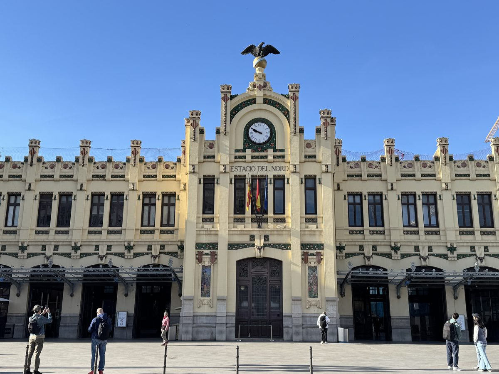

Two thousand years of history, one extraordinary walk. Go at your own pace — the city is yours.
Two thousand years of history, a UNESCO silk exchange, a hidden Sistine Chapel, and the birthplace of paella. Not bad for an afternoon.
Get the full tour with all 9 stops, GPS navigation and audio guide.